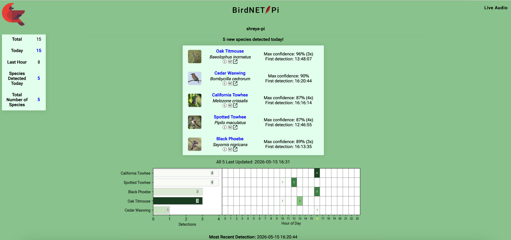
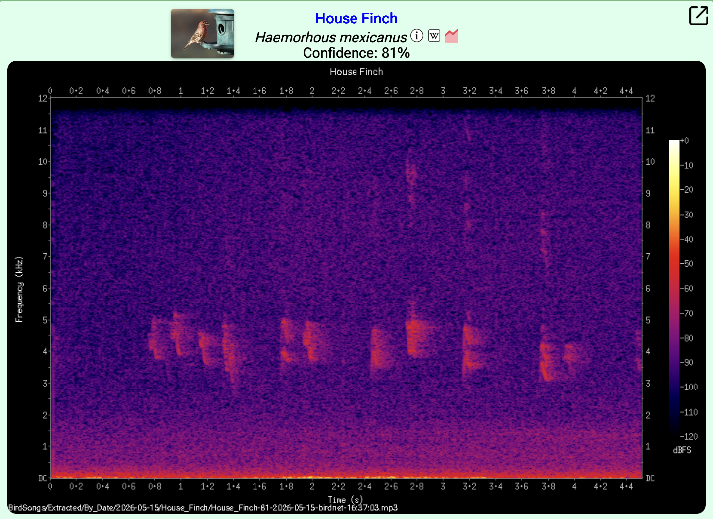

Edge Sensing: Real-Time Bird Detection and Classification
In this project, I built a real-time passive acoustic monitoring system for bird detection and classification at home.
Hardware / Software Setup
Raspberry Pi 4
USB Lavalier Microphone (Omnidirectional Condenser)
64 GB SD Card (SANDISK 64GB Extreme microSDXC UHS-I Memory Card)
Pretrained BirdNET Model / BirdNET Analyzer for bird detection and classification from Cornell.
 Hardware Setup
Hardware Setup
Dashboards: Example Outputs

5 new species detected today. Species are listed, along with when they were detected and
the model's confidence score for each.

Detected House Finch with accompanying spectrogram.
Ongoing Work
Signal Enhancement: Improving detection and classification performance with noise suppression.
Model Compression for efficient inference on the edge
(partnership with moco: Efficient Inference).